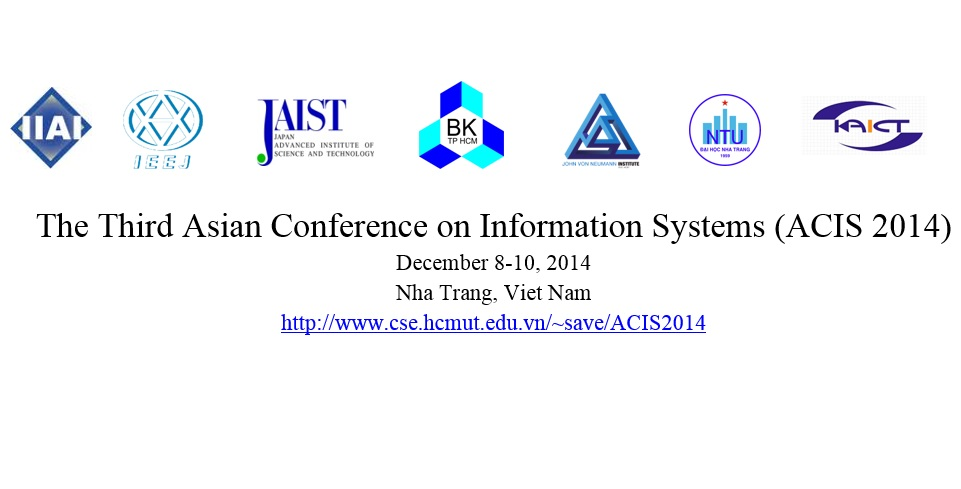

- 

The Third Asian Conference on Information Systems, ACIS 2014, following the successes of ACIS2012 (Siem Reap, Cambodia) and ACIS 2013 (Phukhet, Thailand) is the meeting of researchers, professionals and practitioners to discuss various current issues in information systems and related areas with a special focus on the current conditions and the future sustainable developments of Asian countries. The ACIS 2014 is organized by the Ho Chi Minh University of Technology, Vietnam National University at Ho Chi Minh City, Nha Trang University, Nha Trang Association of ICT (KAICT), International Institute of Applied Informatics, Japan (IIAI), and Japan Advance Institute of Science and Technology (JAIST). This event aims to bring together many scholars, researchers and managers of various areas and industries for intellectual exchanges, research cooperation and professional development. This conference features two tracks inviting presentations of theoretical research findings and case reports. Moreover, this program also offers excellent networking opportunities to participants, with a wonderful taste of local culture. High quality research papers and case studies are invited to be submitted electronically through the conference’s website. The conference areas of interest include, but are not limited to, the following:
|
Artificial Intelligence
Data/Text Mining Communication Technology Image Processing Pattern Recognition Information/Cyber Security Information Retrieval Information Extraction Intelligent Systems and Agents Natural Language Processing Ubiquitous Computing RFID Technology E-health, E-education E-government System Enterprise Information Systems Decision Support Systems ICT For Development (ICT4D/ICTD) Information Security Encryption Technologies Knowledge-based System |
Software Engineering
Learning-Supported System Web-based Intelligent Applications Innovative Business Models Service Design and Engineering Service Science and Management Service Innovation and Marketing E-Services and Service Computing Human Resource Service Knowledge complexity and metrics Knowledge management Knowledge representation/reasoning Knowledge verification/validation Logistics Management and Innovation Control Theory and Applications, Adaptive and Learning Control System, Fuzzy and Neural Control, Mechatronics Manufacturing Control Systems Process Control Systems Robotics and Automation |
| 21 Apr | Workshop Proposal |
| 5 May | Workshop Notification |
| 4 Jul | Paper submission |
| 1 Aug | Notification |
| 6 Oct | Camera Ready & Early |
| 8-10 Dec | Conference |
Any question can be sent to process, e-mail qttho@cse.hcmut.edu.vn